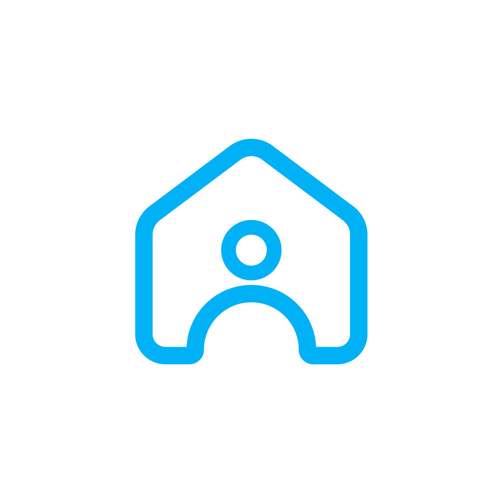

Hub Inteligente de Negócios Imobiliários
Apresentação • Parceiros imobiliários
Imóveis, contatos e informações espalhados entre canais e planilhas.
Boa parte da demanda não chega ao profissional com a oferta certa.
Atendimento e qualificação consomem energia que poderia virar negócio.
A proposta não é substituir o corretor: é ampliar sua distribuição, inteligência e capacidade de atendimento.
Imóveis com dados organizados, fotos e condições comerciais.
Distribui os anúncios e identifica perfis com maior aderência.
Recebe oportunidades qualificadas e mantém sua relação com o cliente.
Mais presença digital, dados organizados e canais adicionais para gerar oportunidades.
Mais visibilidade para a carteira e ferramentas para atender com agilidade.
Oferta encontrada em um canal regional focado.
Matching entre busca, região, faixa de preço e perfil.
Dados padronizados para uma experiência confiável.
Leituras de oferta, preço e comportamento local.
Funcionalidades serão disponibilizadas progressivamente conforme o programa de parceiros e a validação regional.
Começamos com o que gera valor imediato; evoluímos a plataforma junto aos parceiros da região.
| Portais nacionais | Imóvel Central | |
|---|---|---|
| Foco nas cidades médias | Genérico | ✓ Estratégico |
| Inteligência de mercado local | Limitada | ✓ Construída com parceiros |
| Proximidade com profissionais | Escala nacional | ✓ Operação regional |
| Ferramentas alinhadas à operação local | Padronizadas | ✓ Evolução orientada por uso |
Nossa tese: a melhor experiência regional é construída com quem já move o mercado todos os dias.
Entender a operação, organizar a oferta inicial e definir critérios de qualidade.
Colocar a carteira no ar, medir interesse e aperfeiçoar a experiência com dados reais.
Expandir cobertura e serviços a partir dos aprendizados do mercado inicial.
Founder
Produto, negócios e tecnologia
Cofounder
Engenharia de software
Cofounder
Engenharia de software
Participe do piloto Imóvel Central como parceiro fundador.
bruno@imovelcentral.com.br • imovelcentral.com.br • Assis / SP